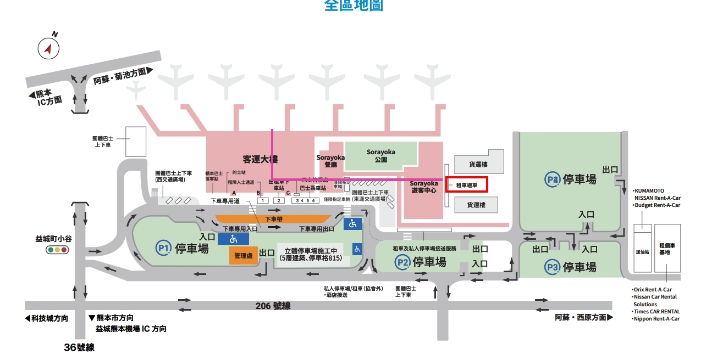

✈️ 航班與家族成員
👥 家族成員：5位大人 + 3位寶貝 (彎彎、肉肉、妞妞)
【去程】1/31 (週日)
TPE 14:30
桃園 T1
中華航空
CI 194
➔
CI 194
➔
KMJ 17:30
熊本機場
【回程】2/5 (週五)
※當晚正值除夕夜
KMJ 18:40
熊本機場
中華航空
CI 195
➔
CI 195
➔
TPE 20:05
桃園 T1
🍡 口袋美食大補帖
熊本市區大本營 (Day 2 & Day 6)
別府・由布院秘境 (Day 4)
🧳 旅行用攜帶物品清單
🔴 重要證件、文件 & 現金
🧥 禦寒衣物 (高山與極冷防護)
👶 寶貝專區 (彎彎、肉肉、妞妞)
🔌 電子、藥品 & 隨身雜物
Day 1 - 1/31(週日) 台北 → 熊本機場 → 熊本新町包棟基地
🏠 住宿：Oneness House Kumamoto 熊本新町（一棟貸獨棟別墅）
17:30 降落通關
17:30 班機降落熊本機場，全員通關。
🚨 全員光速通關最高機密備忘：
為了入境順利、不被卡在人海中，請全家人在「飛機準備降落前，先在機艙內上好廁所」！下飛機後請沿著動線，二話不說「直直、大步地往入境海關櫃檯走去」！絕對不要停下來上沿途的廁所，以免海關瞬間大排長龍卡死，也能防範行李在轉盤上太久被別人誤拿。等順利通關、來到行李轉盤等行李的空檔時，大家再去上廁所唷！
18:00 - 19:30
辦理取車手續
辦理取車手續，沿動線前往租車櫃檯辦理取車手續。
⚠️ 租車現場提示：明確告知店員 "No KEP, just ETC card please." 租借 ETC 卡即可。

📍 map.jpg: 熊本機場客運大樓→租車櫃檯、接駁服務處與專用車道全區動線指引圖
19:30 - 20:00
驅車前往市區民宿
【平地大馬路，車程約 40-50 分鐘】安全極佳，直奔熊本市區新町基地。
🏡 新訂房：Oneness House Kumamoto 熊本新町
📍 地址導航： 熊本市中央區新町4-8-16 (離市電新町站/巴士站步行僅 4 分鐘)
🗺️ Google地圖導航
📞 TEL: 090-3413-4315
🚗 自駕車位： 民宿敷地內免費提供 1 台專屬車位。第二台車請停放至轉角處【タイムズ新町第3】停車場（24小時最高上限 770 日圓，下行李散步 1 分鐘即達）。
🚿 衛浴優勢： 民宿 1 樓與 2 樓各有一套完整浴室與獨立馬桶（共 2 浴室 + 2 馬桶），全員洗漱完全免排隊搶廁所。
晚上活動 & 任務
Foodway 超市大採購
🗺️ 地圖導航連結導航至 **Foodway 超市 熊本サクラマチ店** 買齊隔天早餐（日本大草莓、鮮奶、吐司小蛋糕）。大人推薦採購溏心蛋、無糖優格與黑咖啡，快速補充優質高蛋白與晨間提神！利用民宿 2 樓廚房與大桌聊天吃宵夜最溫馨。
Map Code 已複製！